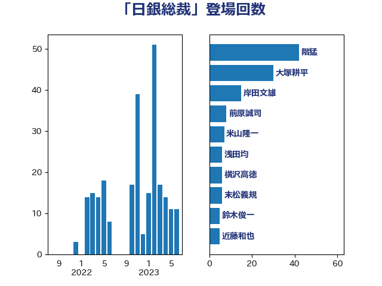

単語「日銀総裁」

| 階猛 | 立憲民主党 | 42 回 |
| 大塚耕平 | 国民民主党 | 30 回 |
| 岸田文雄 | 自由民主党 | 15 回 |
| 前原誠司 | 国民民主党 | 8 回 |
| 米山隆一 | 立憲民主党 | 7 回 |
| 浅田均 | 日本維新の会 | 6 回 |
| 横沢高徳 | 立憲民主党 | 6 回 |
| 末松義規 | 立憲民主党 | 6 回 |
| 鈴木俊一 | 自由民主党 | 5 回 |
| 近藤和也 | 立憲民主党 | 5 回 |
| 藤巻健太 | 日本維新の会 | 5 回 |
| 藤岡隆雄 | 立憲民主党 | 5 回 |
| 沢田良 | 日本維新の会 | 5 回 |
| 佐々木さやか | 公明党 | 5 回 |
| 道下大樹 | 立憲民主党 | 4 回 |
| 山本順三 | 自由民主党 | 4 回 |
| 野田佳彦 | 立憲民主党 | 3 回 |
| 福田昭夫 | 立憲民主党 | 3 回 |
| 盛山正仁 | 自由民主党 | 3 回 |
| 猪瀬直樹 | 日本維新の会 | 3 回 |
| 泉健太 | 立憲民主党 | 3 回 |
| 東徹 | 日本維新の会 | 3 回 |
| 岡本三成 | 公明党 | 3 回 |
| 守島正 | 日本維新の会 | 3 回 |
| 伊藤達也 | 自由民主党 | 3 回 |
| 足立康史 | 日本維新の会 | 2 回 |
| 稲津久 | 公明党 | 2 回 |
| 牧山ひろえ | 立憲民主党 | 2 回 |
| 浜野喜史 | 国民民主党 | 2 回 |
| 浜田聡 | NHK党 | 2 回 |
| 江田憲司 | 立憲民主党 | 2 回 |
| 柴愼一 | 立憲民主党 | 2 回 |
| 後藤祐一 | 立憲民主党 | 2 回 |
| 川田龍平 | 立憲民主党 | 2 回 |
| 大島敦 | 立憲民主党 | 2 回 |
| 住吉寛紀 | 日本維新の会 | 2 回 |
| 高良鉄美 | 無所属 | 1 回 |
| 青柳陽一郎 | 立憲民主党 | 1 回 |
| 阿部弘樹 | 日本維新の会 | 1 回 |
| 重徳和彦 | 立憲民主党 | 1 回 |
| 西田昌司 | 自由民主党 | 1 回 |
| 西田実仁 | 公明党 | 1 回 |
| 舩後靖彦 | れいわ新選組 | 1 回 |
| 窪田哲也 | 公明党 | 1 回 |
| 神谷宗幣 | 参政党 | 1 回 |
| 神田潤一 | 自由民主党 | 1 回 |
| 田村貴昭 | 日本共産党 | 1 回 |
| 田中健 | 国民民主党 | 1 回 |
| 浜口誠 | 国民民主党 | 1 回 |
| 浅尾慶一郎 | 自由民主党 | 1 回 |
| 櫻井周 | 立憲民主党 | 1 回 |
| 松野博一 | 自由民主党 | 1 回 |
| 杉本和巳 | 日本維新の会 | 1 回 |
| 斎藤アレックス | 国民民主党 | 1 回 |
| 掘井健智 | 日本維新の会 | 1 回 |
| 小西洋之 | 立憲民主党 | 1 回 |
| 小田原潔 | 自由民主党 | 1 回 |
| 小山展弘 | 立憲民主党 | 1 回 |
| 塚田一郎 | 自由民主党 | 1 回 |
| 吉良州司 | 無所属 | 1 回 |
| 古賀之士 | 立憲民主党 | 1 回 |
| 勝部賢志 | 立憲民主党 | 1 回 |
| 伴野豊 | 立憲民主党 | 1 回 |
| 中川正春 | 立憲民主党 | 1 回 |
| 上野賢一郎 | 自由民主党 | 1 回 |